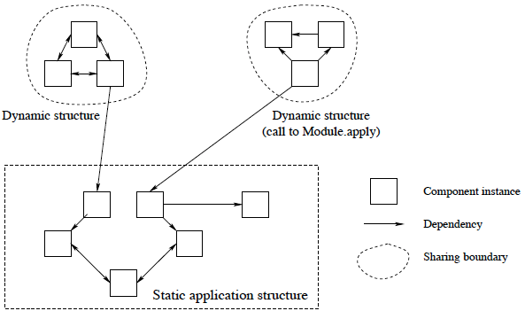

Il<prese dal gruppo di FB>
01 - Stato (implicito, esplicito, esplicito incapsulato)
02 - Variabili single assignment : sas, value store, partial value, equivalence set(Una variabile può essere associata (bound) a un’altra variabi-
le, unificando il valore delle due variabili); variabili dataflow
(dataflow programming): l’esecuzione si sospende o continua a seconda del flusso dei dati. Nel
caso di programmazione concorrente, per esempio, se un pro-
cesso deve fare operazioni con una variabile unbound, si sospen-
de e si riattiverà fino a che un altro processo non imposti quella
variabile.
Il nondeterminismo è la condizione di certi programmi in cui,
a parità di input, l’output non è determinato, può essere diverso.
Tale problema si verifica in due condizioni:
Il linguaggio implementa lo stato (variabili non-single-assi-
gnment);
Il linguaggio implementa la concorrenza.
03 - Environment
04 - Procedura di unificazione dettagliata, operatore di unificazione
05 - Scope di una variabile : l’àmbito di un programma in cui la variabile è visibile e può essere usata. binding variabile tipo: statico, dinamico
scope satico:
– Il significato di una variabile è determinato dallo state-
ment local che la definisce più interno;
– Basta quindi analizzare il testo (che è una struttura stati-
ca) del programma per derivare le informazioni, lo scope
delle variabili di interesse.
scope dinamico:
– Il significato di una variabile è determinato dallo state-
ment local più recente incontrato in fase di ese-
cuzione;
– Uno stesso programma quindi, a parità di sorgente, può
avere un campo di visibilità della stessa variabile diver-
so: se il programma segue un certo altro flusso, non
è detto che quella dichiarazione sia l’ultima prima del-
la dichiarazione della variabile, influendo quindi sulla
variabile.
scope dinamico rende difficile prevedere la semantica del programma; oz usa scope statico
Risoluzione dei Riferimenti
tight scope: evita conflitti identificatore di variabili
06 - Closure, contextual environment
closure : Il valore associato nello store a una procedura; Contiene : 1 definizione della procedura 2 environment a essa legato.
Grazie alla closure si implementa il meccanismo di scope statico
Contexual Environment: Quando una procedura viene definita, viene costruito un contextual environment (CE) che associa tutte le referenze ester-
ne alla procedura, valutate relativamente all’àmbito in cui la pro-
cedura è definita (e non eseguita: in tal caso lo scope sarebbe
dinamico).
Definita la CE, alla procedura viene associata una closure nello
store.
07 - ADT vedi pagina a parte
08 - Thread e coroutine vedi cartella concorrenza
09 - Embedding e dynamic linking
Embedding: caratteristica, sempre legata all’HOP, di avere procedure values all’interno di strutture dati: si possono avere dei records, per esempio, in cui le features sono degli identificatori di variabile di tipo procedure values.
3 domini applicativi:
- Capacità di costruire strutture dati parzialmente istanziate
- (affine alla lazy execution):
- – L’ultimo elemento di una struttura dati viene definito
- attraverso una procedura che, se attivata, estende la
- struttura stessa in maniera dinamica. Tale struttura dati
- quindi ha una dimensione variabile nel tempo (delayed
- evaluation);
- Moduli:
- – Dei records che accorpano operatori (funzioni) tra di loro
- correlati.
- Componenti software
- – Delle procedure che hanno come parametri altre strutture dati di tipo modulo, che consentono di generare
- dei moduli specializzati nel contesto in cui queste componenti vengono usate (e.g. installazione di software,
- connessione con un DB: si adeguano in maniera automatica al contesto applicativo). Anche in questo caso,
- come nei moduli, si tratta di una struttura dati in cui le componenti sono procedure.
DINAMIC LINKING: tecnica di esecuzione del codice che prevede il caricamento in memoria di moduli di programma solo quando richiesti.
Il linking dinamico è un’architettura di programma basata sul modello demand-driven.Se si struttura il programma in moduli, ognuno dei quali è un record con campi costituiti da funzioni elaborative, l’uso della lazy execution consente di realizzare il dynamic linking: solo quando quella funzione viene richiesta dal programma viene caricato il modulo necessario.

La struttura dell’applicazione è statica: usa un componente, poi un altro, poi un altro etc. All’atto del caricamento la struttura statica viene istanziata in modo tale che le componenti dinamiche, che hanno con sé una conoscenza della loro struttura teorica (i legami con altri componenti generici), vengono instanziate in
modo da adattarsi al contesto in cui vengono applicate, creando i dovuti legami: si configurano dinamicamente, diventando componenti “statiche”.
10 - ADT sicuri, con particolare attenzione alla wrap e unwrap : vedi pagina a parte
11 - Tipi di ereditarietà e funzionamento vedi OOP
12 - Tipizzazione dei dati vedi adt
13 - Schema a blocchi di un compilatore
I tre elementi fondamentali sono i seguenti:- La sintassi: definisce la forma corretta del linguaggio;
- – Una qualunque istruzione è trasformabile in istruzioni
- semplici del Kernel Language, che sarà lo strumento
- per esprimere la semantica di qualunque linguaggio di
- programmazione.
- Il Kernel Language consente di usare diversi modelli com-
- putazionali all’interno di uno stesso programma (pro-
- grammazione multiparadigma).
- La semantica: definisce che cosa fanno le istruzioni del linguaggio;
- La pragmatica: definisce quali sono le tecniche di programmazione del singolo linguaggio (come un certo linguaggio viene implementato sulle diverse macchine).
14 - Alberi di derivazione sintattica vedi a lato
15 - Determinare un albero di derivazione sintattica di uno statement a partire da una serie di regole EBNF vedi alberi di derivazione sintattica
16 - Semantica: cos'è, a cosa serve vedi semantica
17 - Perché si ha bisogno di un KL vedi semantica
18 - Macchina astratta e caratteristiche vedi semantica
19 - SAS
20 - Concetto di celle (con mutable store)
21 - HOP: definizione, i 4 principi fondanti con esempio per ognuno; esempio dell'addizionatore
22 - Gestione degli errori: definizione contesto, closure try-catch etc.
23 - Sintassi vedi alberi di derivazione sintattica
24 - FoldR e FoldL vedi high order programming
25 - Programmazione relazionale
26 - Programmazione basata su vincoli
27 - Procedure Value vedi high order programming
La definizione di procedura è una Procedure Value. Tale valore:
- – È definito nello store;
- – È formato da:
- 1. Corpo della procedura;
- 2. CE, il quale:
- * Definisce le referenze esterne;
- * È definito a partire dallo scope statico
L’attivazione della procedura comporta:- 1. Un test per la correttezza di tipo (dev’essere di tipo
- procedura);
- 2. Un test per la corrispondenza dei parametri;
- 3. Uso del CE
Nel contesto della programmazione dichiarativa, una proce-
dura, che è un valore, è un tipo di dato al quale vengono
associate delle istruzioni che ne determinano il valore, ese-
guite all’interno di un CE che mappano le variabili free (quelle
non dichiarate all’interno del contesto che identifica la proce-
dura).
Una procedura, quindi, non è solo una parte di codice, ma
contiene anche una sorta di fotografia di un mondo che non
esiste più, ma esisteva quando è stata definita la procedura.
Le procedure associano i valori alle variabili libere, quindi,
in base al contesto in cui le procedure stesse sono dichiarate.
In fase di esecuzione usano questi valori.
28 - Last call optimization vedi high order programming
29 - Accumulatori vedi high order programmin
30 - Concorrenza, non determinismo, causal order vedi concorrenza thread
31 - Semantic statement vedi semantica